Unblurring images of text with convolutional neural networks
Gardar Andri Sigurdsson
gas30@hi.is
Department of Mathematics, University of Iceland
Introduction
Sharpening images of text is easy for humans. Take for example Figure 1.
Figure 1: Blurred image
It is easy for anyone to output Figure 2 based on Figure 1.
Figure 2: The original image
We are lazy, however, and do not want to do this over and over so we try to automated the unblurring with neural networks!
Development
It is not as easy to get real photos of blurred text and their unblurred conterparts so in the interest of time a training set was generated. Generating images of text and to blurring them with computer software is simple. A simple python script utilizing the PIL library is all it takes. The size of the training set was 10.000 images. Examples from the training set can be found in Figure 3.
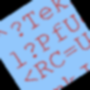
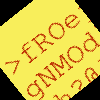 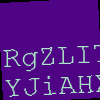 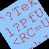
Figure 3: Examples from the training set. The upper line shows input images and the lower show the target output.
Formally, let \(F_\theta\) be the neural network which unblurrs images, \(Y_1,Y_2,…,Y_n\) be images and \(X_1,X_2,…,X_n\) their blurred conterparts. We want to find parameters \(\theta\) for the neural net which minimize the mean squared error per pixel per image: \[ \frac{1}{n} \sum_{i=1}^n (Y_i - F_\theta(X_i))^2 \] To solve this problem two types of architectures for \(F_\theta\) were tried. Both of them, however, were some form of convolutional neural network.
The first architecture tried was a few convolutional layers which had the same input and output dimensions, i.e. the result achived when padding set to "SAME" in the tf.conv2d function. However, the number of channels in the intemediate layers was not fixed. Between layers, leaky relu was used as the activation function, except for the last layer were a normal relu activation was used. This architecture did not work well.
Figure 4: Left column: The blurred image, Middle column: The target output, Right column: The outputted image
Looking at the outputs of the neural network in Figure 4, we see it has simply learned the identity function. This seems to be a local minima of the cost function and a pretty strong one. Changing the number of layers, changing the activation functions, changing the cost function and changing the number of intermediate channels, had no effect on what the net converged to, the local mimima could not be avoided in this way. Therefore a redesign needed.
Instead of forcing the output dimensions of the convolutions to be the same for all the layers, the convolution layers are allowed to shrink the image. This corresponds to setting padding to "VALID" in the tf.conv2d function. However, to calculate the per pixel mean squared error the outputted image needed to have the same dimension as the input image. Therefore deconvolutional layers were needed to enlarge the image again.
Figure 5: The second neural network architecture tried
Figure 5 shows the second network architecture tried. The first four transformations are convolutions with leaky relu activations. The first two convolutions have stride 2, but the othes have stride 1. Four deconvolutions follow the convolutions. The leaky relu was used as the activation function after every convolution except after last layer were a regular relu was used. The number of channels was choosen such that there would be at least as many features in the intermediate representations as in the input image so in theory all the information from the input image could be preserved. With this architecture the network was able to fit the data better.
Training
Batch gradient descent was used to train the neural net. The batch size was 8 and the learning rate was set to 0.001. The total training time was around 6 hours for a total of ~18 epochs. Figure 6 shows the training progress.
Figure 6: The cost while training, the orange line is the cost on validation set (a seperate dataset not trained on) and the green line is the cost on the training set.
Finding a good learning rate for training was challenging. The network would only learn reasonably fast for a learning rate which was close to a learning rate which made the training diverge. A novel method was used to find a good learning rate: simply print out a parameter in the neural network, one parameter from the first layer was used here, and print it out after each iteration. If it is not changing: increase the learning rate. If it is changing and getting large fast then the training is diverging. Otherwise, if the parameter is not changing to fast, this learning rate should be choosen. This method is of course really simple but yielded great results for this work.
The neural network started to fit the training data better than before after choosing the learning rate carefully. First it learned about the black parts around the square, then about coloring the square with the correct color. Then slowly but surely the network learned to output the letters unblurred. This progression can be viewed in figures 7 through 9. In them, the left column is the input image to the neural network, the middle column is the target output and the right column is the image the neural network outputted.
Figure 7: 500 iterations
Figure 8: 3000 iterations
Figure 9: 22000 iterations
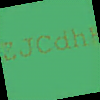
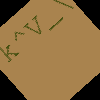 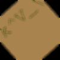 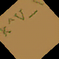
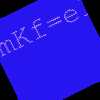 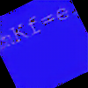
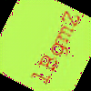
Figure 10: Images from the validation set. Left: The original image, Middle: The blurred image, Right: The outputted image after training.
Figure 10 shows how the neural network performs on blurred images it has not seen before. The neural network seems to be able to generalize pretty well to the validation set from only 10.000 images and 18 epochs of training. The fourth row of images shows that sometimes the network adds noise to the image. This could maybe be fixed by training for a longer time.
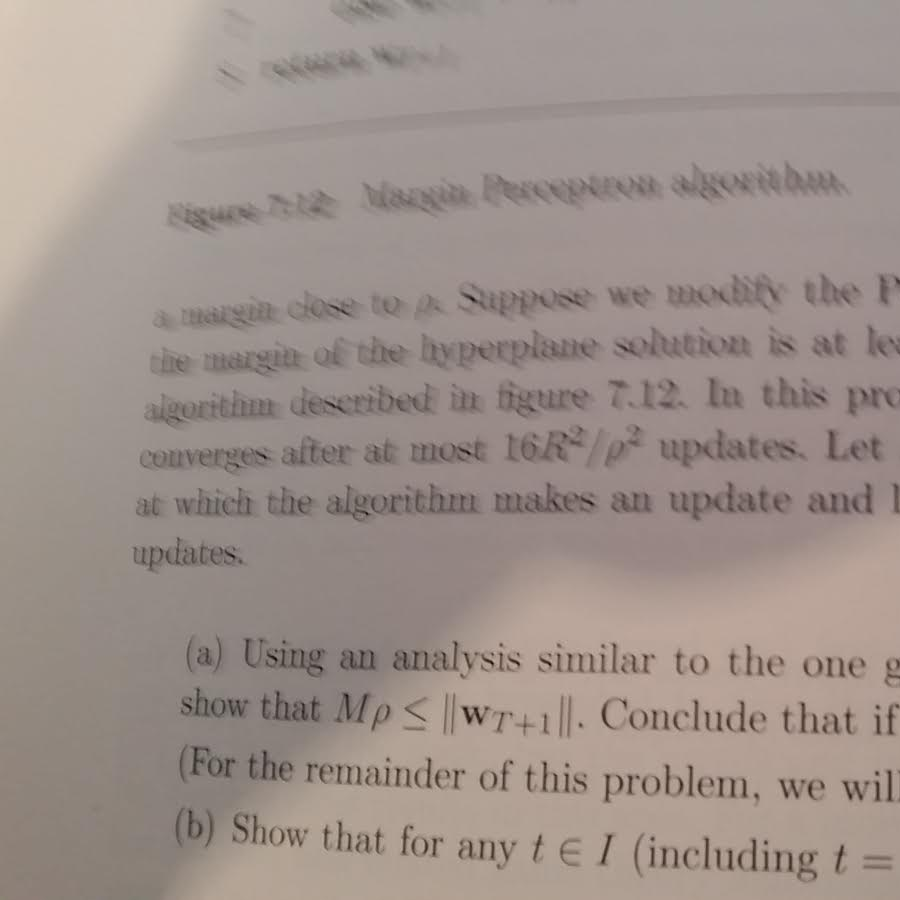 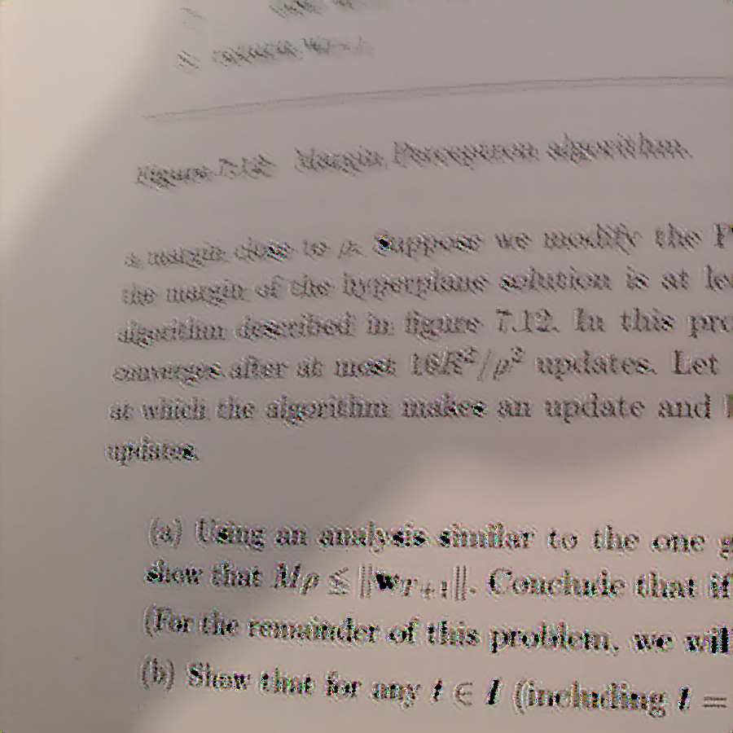
Figure 11: A practical example
The practical use of this work is to sharpen photos of text taken with for example a smart phone. Figure 11 shows two images, the one on the top is a image taken of text and the one on the bottom is the output generated by the neural network when the image on the top is inputted. The unblurring is poor for this photo. The culprit here might be the simple distribution which the training data follows. To improve the quality one might try to make the blurring effect added in the training data more complex. Instead of only using Gaussian blur we might also offset the blur such that it is biased in one random direction to try and simulate the blurr observed in the upper image in Figure 11. This is speculation, however, so more work is needed to determine if that improves the overall quality.
Conclusion
In this work we presented a neural network architecture for unblurring simple images of blurred text. Visually, the trained network showed good results on the validation set but failed to perform well on a simple real world example Choosing the correct neural network architecture was paramount in avoiding the strong local minima of "outputing the input image". We presented a novel method for choosing the learning rate. Although it is simple, it gave good results for this work and highlighted how important choosing a good learning rate is for training.
The code for this project can be found here. Thanks for reading!